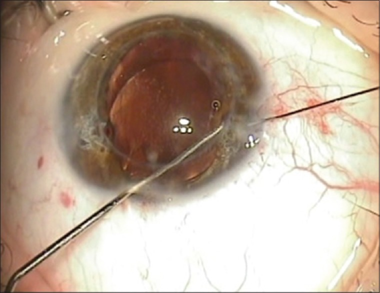
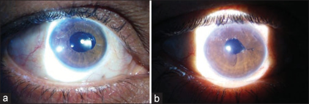
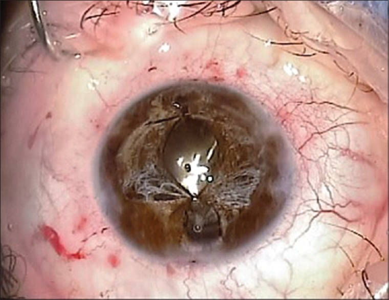
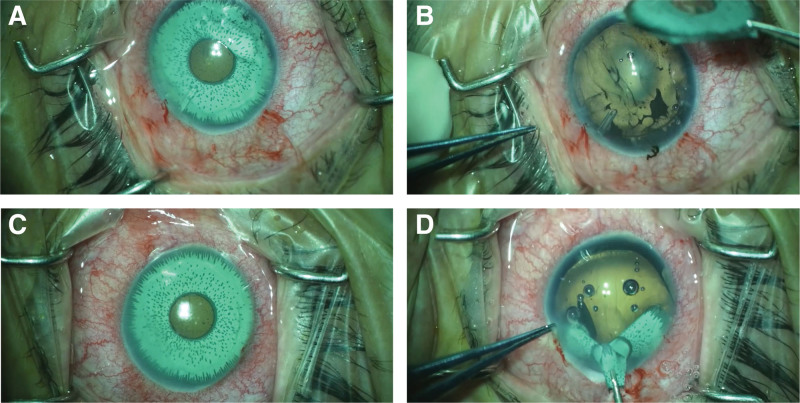

3256 — Đồng tử giãn cố định sau UZS: pupilloplasty (McCannel / single-pass four-throw) có đáng làm? / Pupilloplasty for persistent mydriasis after Urrets–Zavalia syndrome
Tags: pattern:dong-tu-gian-co-dinh pattern:mot-ben pattern:mat-phan-xa-anh-sang pattern:choi-quang pattern:teo-mong-mat pattern:di-ung-anh-sang vung:mat vung:mong-mat vung:dong-tu vung:tien-phong vung:goc-tien-phong protocol:do-dong-tu protocol:den-khe protocol:soi-goc protocol:AS-OCT protocol:wavefront protocol:do-nhan-ap protocol:dem-te-bao-noi-mo score:khong incidentaloma:khong
Mức chắc chắn (certainty): tổng hợp y văn (literature synthesis) — dựng từ ca UZS sau DALK mổ iridoplasty (Oman J Ophthalmol 2017, PMC5657167, CC BY-NC-SA), video kỹ thuật SFT cho UZS (Indian J Ophthalmol 2022, PMC9672779, CC BY-NC-SA), 14 mắt SFT sau cố định IOL xuyên củng mạc (Indian J Ophthalmol 2026, PMC13235860, CC BY-NC-ND), 13 mắt SFT sau ghép giác mạc xuyên có hướng dẫn wavefront (Indian J Ophthalmol 2025, PMC11831946, CC BY-NC-SA), 12 mắt SFT ở khuyết mống mắt bẩm sinh/chấn thương (Indian J Ophthalmol 2024, PMC11149503, CC BY-NC-SA), 22 mắt SFT + phaco trong góc đóng cấp (BMC Ophthalmol 2025, PMC12860118, CC BY-NC-ND), 45 mắt SFT so với khâu thắt nút cổ điển (BMC Ophthalmol 2023, PMC9830823, CC BY), 4 mắt iris cerclage (Indian J Ophthalmol 2021, PMC8186584, CC BY-NC-SA), 9 mắt iris cerclage + cố định IOL (Front Med 2026, PMC13657979, CC BY), 70 mắt pupilloplasty đa kỹ thuật (J Clin Med 2022, PMC9181509, CC BY), 19 mắt artificial iris nội bao (Clin Exp Ophthalmol 2022, PMC9542440, CC BY-NC-ND), 51 lần đặt artificial iris (J Ophthalmol 2018, PMC6174745, CC BY), 14 mắt triple procedure (Cornea 2021, PMC8423143, CC BY-NC-ND), và 2 ca biến chứng implant mống mắt thẩm mỹ (BMC Ophthalmol 2015, PMC4528717, CC BY; Medicine 2024, PMC10956980, CC BY). Nhóm không có bệnh nhân của mình; chỗ chưa đủ chắc ghi "chưa rõ". Không ghi tên tác giả — attribution dùng tạp chí + năm + PMCID/DOI, đối chiếu Europe PMC ngày 2026-11-21.
Vị trí trong thư viện: 3251 phủ UZS cấp sau ICL (đồng tử giãn + teo mống mắt + glôcôm thứ phát, tiên lượng theo tốc độ hạ nhãn áp); 3238 phủ UGH sau ICL; 3249 phủ PDS/glôcôm sắc tố; 3257 phủ tăng nhãn áp từng cơn một bên; 3255 phủ loét giác mạc dị ứng; 3253 phủ canxi hóa IOL. Bài này trả lời một câu duy nhất: bệnh nhân UZS đã ổn định nhãn áp nhưng đồng tử vẫn giãn 6–8 mm, chói–quầng không chịu được — có nên mổ sửa đồng tử không, mổ kiểu nào, và kỳ vọng thực tế là gì?
Câu chốt: (1) UZS là thiếu máu → teo cơ vòng đồng tử, không phải "cơ vòng đang ngủ": thuốc co đồng tử không có tác dụng (PMC9672779), nên không có "thuốc chữa" — chỉ có thu nhỏ khẩu độ bằng phẫu thuật; (2) phẫu thuật không phục hồi phản xạ ánh sáng, chỉ kéo bờ mống mắt lại gần nhau tạo khẩu độ 2,5–3 mm, và có thể bẻ dính góc trước (PAS) giúp hạ nhãn áp (PMC9672779; PMC5778544); (3) chỉ định là triệu chứng (chói, quầng, sợ ánh sáng, anisocoria) + đồng tử ≥ 6 mm + nhãn áp đã ổn định + không viêm hoạt động + đủ nội mô; (4) kỹ thuật ít xâm lấn nhất là single-pass four-throw (SFT) với chỉ polypropylene 10-0: đồng tử 5,79 → 3,83 mm, 6,18 → 2,59 mm và Strehl tăng > 3 lần (PMC12860118; PMC13235860); SFT nhanh hơn khâu thắt nút cổ điển (22,32 vs 30,35 phút) với kết quả tương đương (PMC9830823); (5) khi mống mắt đã mất tổ chức, artificial iris là lựa chọn nhưng 25,5% biến chứng và mất nội mô 57,6% ở triple procedure (PMC6174745; PMC8423143), còn implant mống mắt thẩm mỹ đặt trong tiền phòng là chống chỉ định — gây phù giác mạc, glôcôm, teo mống mắt toàn bộ nhiều năm sau (PMC4528717; PMC10956980).
1. Tổng quan bệnh học – cơ chế hình ảnh (TẠI SAO)
1.1 UZS: cơ vòng đồng tử chết vì thiếu máu, không phải "liệt tạm thời"
- Cơ vòng đồng tử (sphincter pupillae) là dải cơ trơn đồng tâm, rộng 0,5–1 mm sát bờ đồng tử, chỉ có phó giao cảm co lại; cơ giãn (dilator pupillae) chỉ là lực đối kháng yếu. Máu nuôi mống mắt đến từ vòng động mạch lớn (major arterial circle) rồi mao mạch tận — tưới máu tỉ lệ với chênh áp tưới máu = huyết áp động mạch − nhãn áp.
- Khi nhãn áp vọt 40–65 mmHg sau mổ nội nhãn, mống mắt là mô "đầu cuối": giảm tưới máu trước tiên. Trong loạt pIOL, nhãn áp ngày 1 32–64 mmHg và 4/4 mắt giãn cố định không hồi phục; chụp mạch huỳnh quang mống mắt còn thấy làm đầy từng đoạn chậm ở 4–6 tuần (PMC8456705). Ca UZS sau DALK: đồng tử 7 mm không đáp ứng ánh sáng ngay trong mổ, nhãn áp ngày 1 45 mmHg (PMC5657167).
- Hệ quả mô học (suy ra từ hình ảnh và diễn tiến): teo cơ vòng + xơ hóa mô đệm mống mắt. Cơ đã hoại tử thì không co lại được; cơ giãn không còn đối kháng nên đồng tử nằm ở vị trí giãn trung bình – tối đa. Vì vậy pilocarpin 1–2% không làm nhỏ đồng tử trong UZS thật (PMC9672779) — đây là điểm khác biệt với giãn do thuốc (còn đáp ứng, tự co sau 1–7 ngày).
- Chưa rõ: chưa có nghiên cứu mô học ở người chứng minh tỉ lệ hoại tử vs chỉ mất chức năng của cơ vòng; cũng chưa rõ vì sao một số mắt cùng mức nhãn áp lại hồi phục một phần. Ghi "chưa rõ — cần tra", không suy diễn.
1.2 Phẫu thuật làm gì — và KHÔNG làm gì
- Làm được: khâu kéo bờ đồng tử lại gần nhau → khẩu độ nhỏ hơn, tròn hơn; đồng thời kéo mống mắt ra khỏi góc tiền phòng, có thể bẻ dính góc trước (PAS) và hạ nhãn áp (PMC9672779; PMC5778544). Đây là lý do "sửa đồng tử" đôi khi vừa giảm chói vừa cứu góc.
- Không làm được: không phục hồi cơ vòng. Đồng tử sau mổ vẫn không co giãn theo ánh sáng; mục tiêu là một khẩu độ cố định 2,5–3 mm, không phải "đồng tử bình thường". Các loạt công bố kích thước đồng tử ổn định nhưng không báo tỉ lệ phản xạ ánh sáng trở lại — đây là khoảng trống (xem mục 7).
- Hệ quả thực hành: phải nói trước với bệnh nhân ba điều: (1) chói giảm nhưng có thể không hết hoàn toàn; (2) đồng tử vẫn không phản xạ, chỉ nhỏ hơn; (3) anisocoria có thể còn nếu mắt bên 2–3 mm mà mắt mổ 3–4 mm. Ca UZS sau DALK đạt 4 mm (từ 7 mm) và giảm chói rõ nhưng không về 2–3 mm (PMC5657167).
1.3 Tại sao đích là 2,5–3 mm — giải thích bằng quang học
- Đồng tử là khẩu độ chắn sáng của hệ quang. Hai lực đối nghịch: nhiễu xạ (diffraction) tăng khi khẩu độ nhỏ (tỉ lệ với λ/D), còn quang sai bậc cao (higher-order aberration) tăng khi khẩu độ lớn (diện tích đồng tử tăng theo bình phương bán kính). Điểm cân bằng của mắt người ≈ 2,5–3 mm: dưới 2 mm nhiễu xạ chiếm ưu thế, trên 3–4 mm quang sai và tán xạ ngoại vi tăng nhanh.
- Bằng chứng định lượng sau SFT ở 14 mắt cố định IOL xuyên củng mạc: đồng tử mesopic 6,18 ± 0,88 → 2,59 ± 0,21 mm; HO RMS 3,41 ± 2,96 → 0,38 ± 0,32 µm; coma 1,38 ± 1,53 → 0,16 µm; PSF Strehl 0,064 ± 0,039 → 0,210 ± 0,094 (tăng hơn 3 lần); BCVA 0,62 ± 0,31 → 0,23 ± 0,10 logMAR (PMC13235860).
- Ở 13 mắt sau ghép giác mạc xuyên có hướng dẫn wavefront: đồng tử 6,077 ± 0,787 → 2,538 ± 0,139 mm; BCVA 1,03 ± 0,32 → 0,24 ± 0,09 logMAR; astigmatism RMS 4,169 ± 3,876 → 0,875 ± 0,926 µm (PMC11831946).
- Cách đọc đúng: cải thiện thị lực/quang sai đến từ khẩu độ nhỏ + bờ đồng tử đều, không phải "cơ vòng hồi phục". Vì vậy đo wavefront/pupillometry trước mổ giúp chọn ca và dự đoán mức cải thiện; mổ "đại trà" cho mọi đồng tử giãn mà không đo là bỏ qua phần định lượng này.
1.4 Vì sao bệnh nhân xin mổ: chói, quầng, sợ ánh sáng và anisocoria
- Đồng tử lớn làm tăng lượng ánh sáng tán xạ vào mắt và tăng quang sai ngoại vi, biểu hiện chói (glare), quầng (halos), nhìn mờ khi ngược sáng, có khi đau đầu do sợ ánh sáng. Ca UZS sau DALK mô tả "severe photophobia, glare, and decreased vision", BCVA 20/200, sau phẫu thuật 20/25 và giảm chói đáng kể (PMC5657167).
- Anisocoria gây mất thẩm mỹ rõ ở người trẻ; đây là lý do thứ hai, nhưng không được là lý do duy nhất để mổ — vì phẫu thuật có nguy cơ mất nội mô, viêm, tăng nhãn áp.
- Thử không phẫu thuật trước: kính tiếp xúc có đồng tử nhân tạo (pupil occluder/iris-print contact lens) hoặc kính râm có tròng phân cực giúp dự đoán mức giảm chói nếu khẩu độ nhỏ lại. Đây là thử nghiệm chức năng, không điều trị nguyên nhân; chưa có số liệu đối chứng trong các loạt đã đọc → ghi nhận là kinh nghiệm thực hành, không phải bằng chứng mức cao.
2. Mẫu hình + chẩn đoán phân biệt theo vị trí (Gamut)
- Mẫu hình chốt: MỘT mắt, đồng tử 5–9 mm, không co với ánh sáng và không đáp ứng pilocarpin, xuất hiện sau mổ nội nhãn (ICL, phaco, PKP/DALK, trabeculectomy), kèm teo mống mắt (mảng teo/vòng đồng tâm), tiền phòng sâu, có thể PAS và nhãn áp cao giai đoạn đầu; bệnh nhân chói–quầng nhiều.
- Gamut theo "vị trí của dấu hiệu":
| Vị trí dấu hiệu | Gamut chính | Câu hỏi phân biệt |
|---|---|---|
| Bờ đồng tử (khẩu độ) | UZS · giãn do thuốc · TASS · góc đóng cấp · đứt cơ vòng do chấn thương · Adie · liệt dây III · khuyết mống mắt bẩm sinh | Đáp ứng pilocarpin? Có → thuốc/Adie; không → UZS/chấn thương/teo |
| Mô đệm mống mắt | UZS (teo lan tỏa/vòng đồng tâm) · herpes (teo từng vùng) · PDS (lõm ra sau, sắc tố) · chấn thương (rách, iridodialysis) · bẩm sinh (coloboma) | Teo đồng tâm + sau mổ + một bên = UZS; sắc tố dải bè hai bên = PDS |
| Góc tiền phòng | UZS có PAS · góc đóng cấp · PXF · UGH · tân mạch | PAS một bên sau mổ → UZS đã gây glôcôm; góc mở, không PAS → ít UZS |
| Tiền phòng | TASS (mủ, fibrin, phù giác mạc) · UZS (thường trong, ít tế bào) · viêm màng bồ đào | Phản ứng tiền phòng mạnh 12–48 giờ = TASS, không phải UZS đơn thuần |
| Hậu đoạn | UZS không có tổn thương hậu đoạn | Vitritis, đốm trắng võng mạc, phù hoàng điểm → tìm nguyên nhân khác |
- Ba câu hỏi lâm sàng quyết định (theo thứ tự): (1) Đồng tử có co với pilocarpin 1–2% không? (2) Có tiền sử mổ nội nhãn + tăng nhãn áp cấp ngày 1 không? (3) Có teo mống mắt và PAS không? Ba "có" = UZS; nếu (1) "có" thì chưa mổ, chờ thêm.
3. Bảng so sánh phân biệt (ma trận đối chiếu)
| Thực thể (entity) | Hình ảnh điển hình (đèn khe/AS-OCT) | Chốt vào (rule-in) | Chốt loại (rule-out) | Gợi ý xác nhận |
|---|---|---|---|---|
| UZS (đồng tử giãn cố định sau mổ) | Một bên, đồng tử 5–9 mm không phản xạ, teo mống mắt (mảng/vòng đồng tâm), tiền phòng sâu, PAS ở ca muộn; sau ICL/PKP/DALK/phaco | Sau mổ nội nhãn + tăng nhãn áp ngày 1 + không đáp ứng pilocarpin + teo mống mắt | Còn co với pilocarpin → giãn do thuốc; mủ tiền phòng → TASS; góc đóng → góc đóng cấp | Soi góc + pilocarpin test + AS-OCT mống mắt; hỏi mốc mổ |
| Giãn do thuốc (tropicamid/phenylephrin/atropin) | Đồng tử đều, tròn, mống mắt không teo, tiền phòng trong, không PAS | Co lại với pilocarpin 1–2%; tự hết 1–7 ngày sau liều cuối | Không đáp ứng pilocarpin + teo mống mắt → không phải | Ngừng thuốc, theo dõi 1 tuần; hỏi thuốc nhỏ |
| TASS (toxic anterior segment syndrome) | Khởi phát 12–48 giờ, phù giác mạc lan tỏa, mủ/fibrin tiền phòng, đồng tử có thể giãn, đau nhiều | Phản ứng tiền phòng mạnh sau mổ + cấy âm + đáp ứng corticoid | Tiền phòng gần trong, teo mống mắt đồng tâm, PAS → UZS hơn là TASS | Đèn khe; cấy âm; đáp ứng corticoid; theo dõi teo mống mắt 3 tháng |
| Góc đóng cấp nguyên phát | Đau dữ dội + nôn, giác mạc phù, tiền phòng nông, góc đóng, đồng tử giãn dạng bầu dục | Góc đóng trên soi góc + tiền phòng nông + nhãn áp rất cao | Tiền phòng sâu + góc mở → không phải góc đóng; PAS một bên sau mổ → UZS | Soi góc sau làm mềm giác mạc; AS-OCT; LPI cho mắt bên |
| Đứt cơ vòng do chấn thương | Khuyết bờ đồng tử (notch), bờ rách, có thể iridodialysis, tiền sử chấn thương | Tiền sử chấn thương + notch/rách bờ đồng tử | Không tiền sử chấn thương, teo đồng tâm sau mổ → UZS | Đèn khe; soi góc tìm iridodialysis; UBM/AS-OCT |
| Adie (đồng tử tonic) | Một bên, giãn 4–6 mm, co chậm với ánh sáng gần, co với pilocarpin 0,125% (liều thấp), mống mắt không teo, hay ở nữ trẻ, giảm phản xạ gân | Co với pilocarpin loãng 0,125% + không teo mống mắt + không sau mổ | Không co với pilocarpin loãng + teo mống mắt → không phải Adie | Pilocarpin 0,125%; đèn khe; khám phản xạ gân |
| Liệt dây III (thể chèn ép) | Sụp mi + mắt lệch xuống–ngoài + đồng tử giãn, có thể đau đầu; một bên | Sụp mi + hạn chế vận nhãn + đồng tử giãn | Không sụp mi, vận nhãn bình thường → không phải | Khám vận nhãn; MRI/CTA sọ nếu nghi chèn ép (PTA) |
| Khuyết mống mắt bẩm sinh/aniridia | Từ nhỏ, hai bên hoặc một bên, thiếu mô mống mắt, có thể kèm rung giật nhãn cầu, giảm thị lực | Có từ nhỏ + thiếu mô mống mắt | Mống mắt đủ, teo mới sau mổ → không phải bẩm sinh | Hỏi tiền sử; ảnh cũ; khám gia đình; gene nếu cần |
- Ba dấu hiệu quyết định: (1) Pilocarpin 1–2% không làm nhỏ = cơ vòng mất chức năng; (2) teo mống mắt đồng tâm + sau mổ = UZS; (3) PAS một bên = UZS đã gây glôcôm, phẫu thuật sửa đồng tử có thể vừa giảm chói vừa hạ nhãn áp.

Mắt trái của bệnh nhân 38 tuổi có UZS sau ghép giác mạc xuyên (DALK): đồng tử 7 mm, không đáp ứng ánh sáng; ảnh chụp trong mổ đang đưa kim qua tiền phòng để đặt mũi khâu mống mắt đầu tiên. Ghép giác mạc còn trong. Nguồn: Oman J Ophthalmol 2017 (PMC5657167), Fig. 1, CC BY-NC-SA 3.0.4. Protocol khám/đo + chỉ định + kỹ thuật
4.1 Thứ tự đánh giá trước mổ (8 bước)
| Bước | Dụng cụ | Ghi nhận | Ngưỡng hành động |
|---|---|---|---|
| 1 | Hỏi bệnh | Mốc mổ, thuốc nhỏ, chói/quầng mức nào, sợ ánh sáng, anisocoria | Chói ảnh hưởng sinh hoạt mới cân nhắc mổ; chỉ "thấy khó chịu nhẹ" → theo dõi |
| 2 | Đo đồng tử chuẩn hóa | Đường kính dưới 5 lux (mesopic) và dưới ánh sáng mạnh, cả hai mắt; ghi mm | ≥ 6 mm là ngưỡng thực dụng; các loạt dùng ≥ 5 mm hoặc > 4 mm sau camcoline (PMC13235860; PMC9830823) |
| 3 | Pilocarpin 1–2% | Co đồng tử sau 30–45 phút | Co rõ → giãn do thuốc/Adie, không mổ; không co → UZS/chấn thương/teo |
| 4 | Đèn khe | Teo mống mắt (mảng, vòng đồng tâm), rách bờ, dính sau, mủ/tế bào, thể thủy tinh/IOL | Viêm hoạt động → điều trị trước; rách lớn → kế hoạch khâu khác |
| 5 | Soi góc + nhãn áp | PAS, góc mở/đóng, sắc tố; IOP cả hai mắt | IOP chưa ổn định → hạ áp/kiểm soát trước; PAS rộng → cân nhắc goniosynechialysis cùng lúc |
| 6 | AS-OCT tiền đoạn | Độ dày mống mắt, khoảng cách IOL–mống mắt, góc, ACD | Mống mắt quá mỏng → nguy cơ chỉ cắt qua mô (cheese-wiring); ghi kế hoạch khâu |
| 7 | Đếm tế bào nội mô | ECD (tế bào/mm²) | ECD thấp (< ~1.500/mm² tùy tuổi/mắt bên) → cân nhắc artificial iris/ghép thay vì khâu nhiều; thận trọng |
| 8 | Wavefront + thị trường/đáy mắt | HO RMS, coma, Strehl, thị lực, tiềm năng thị giác | Wavefront dự đoán cải thiện rõ (như ca ghép giác mạc, PMC11831946) → chỉ định hợp lý; mắt không còn tiềm năng → không mổ vì thẩm mỹ |
Nguyên tắc: đo trước khi giãn đồng tử; đo cả hai mắt để so; không mổ khi còn viêm hoặc IOP chưa ổn định; không hứa "đồng tử bình thường".
4.2 Chỉ định – chống chỉ định (bảng quyết định)
| Chỉ định (đủ các điều kiện) | Chống chỉ định / hoãn |
|---|---|
| Chói–quầng–sợ ánh sáng ảnh hưởng sinh hoạt, bệnh nhân hiểu mục tiêu là khẩu độ | Viêm hoạt động hoặc nhãn áp chưa kiểm soát |
| Đồng tử ≥ 6 mm, không đáp ứng pilocarpin, teo mống mắt | Giãn do thuốc còn khả năng hồi phục (thử pilocarpin âm) |
| IOP ổn định ≥ 3 tháng (hoặc đã có kế hoạch glaucoma surgery) | ECD rất thấp không đủ dự trữ, hoặc giác mạc mất bù chưa xử lý |
| Không viêm, không nhiễm, không có chỉ định mổ nội nhãn cấp | Mắt không còn tiềm năng thị giác, mổ chỉ vì thẩm mỹ |
| Đủ mô mống mắt để khâu (đánh giá trên đèn khe/AS-OCT) | Mống mắt mất gần toàn bộ → chuyển artificial iris, không cố khâu |
4.3 So sánh kỹ thuật (có số)
| Kỹ thuật | Cách làm (tóm tắt) | Kết quả định lượng | Ưu / nhược |
|---|---|---|---|
| Single-pass four-throw (SFT) | Chỉ polypropylene 10-0, một lần xuyên qua bờ đồng tử, 4 vòng (throw) quanh sợi chỉ, không thắt nút ngoài; đầu chỉ cắt sát, giấu trong mô | 5,79 → 3,83 mm (PMC12860118); 6,18 → 2,59 mm, Strehl 0,064 → 0,210, BCVA 0,62 → 0,23 logMAR (PMC13235860); thời gian 22,32 ± 4,58 phút vs 30,35 ± 5,55 phút ở kỹ thuật thắt nút (PMC9830823) | Nhanh, ít dụng cụ, khó tuột nút; không dùng khi mống mắt quá mỏng/rách phức tạp |
| McCannel / Siepser slip-knot | Khâu mũi rời qua bờ đồng tử, nút trượt ra ngoài rồi rút vào tiền phòng | 70 mắt: BCVA nhóm mydriasis 0,7 → 0,52 logMAR; slip-knot là kỹ thuật duy nhất cải thiện thị lực có ý nghĩa (PMC9181509) | Kinh điển, dễ học; nhiều mũi nếu khuyết rộng; nút có thể lộ |
| Iris cerclage | Chỉ 9-0/10-0 polypropylene luồn vòng quanh chu vi mống mắt ~1 mm từ bờ, siết đều | 6–9 mm → 3,5–4,5 mm, không biến chứng (PMC8186584); 8,851 → 5,263 mm, BCVA 0,94 → 0,75 logMAR, IOP 17,81 → 13,70 mmHg (PMC13657979) | Tốt cho giãn lan tỏa; khó, nhiều lần vào tiền phòng, nguy cơ cắt mô |
| Artificial iris (nội bao/xuyên củng mạc) | Đặt diaphragm nhân tạo thay mống mắt | 19 mắt: tăng IOP 42,1%, CME 15,8%, viêm kéo dài 15,8%, sửa lại 5,3%; 94,4% hài lòng thẩm mỹ (PMC9542440); 51 lần: biến chứng 25,5%, giảm dần 83,3% → 13,3% theo kinh nghiệm; 13/45 mắt giảm thị lực (PMC6174745); triple procedure mất 57,6% ECD (PMC8423143) | Dành cho mất mô lớn/aniridia; không phải lựa chọn đầu tay cho UZS còn mô |
| Implant mống mắt thẩm mỹ tiền phòng | Đặt implant màu trong tiền phòng (NewColorIris...) | Phù giác mạc, tăng nhãn áp, teo mống mắt toàn bộ sau 4 năm; cần ghép giác mạc/keratoprosthesis (PMC4528717; PMC10956980) | Chống chỉ định — không dùng để đổi màu mắt |
| Kính tiếp xúc đồng tử nhân tạo | Thử khẩu độ nhỏ trước mổ | Không có số liệu đối chứng trong các loạt đã đọc | Thử không xâm lấn, giúp bệnh nhân hình dung; không điều trị |
4.4 Kích thước đích và theo dõi sau mổ
- Đích 2,5–3 mm: tác giả loạt SFT + phaco nêu 3,0–3,5 mm là phù hợp (PMC12860118); loạt wavefront đạt 2,538 mm (PMC11831946) và 2,59 mm (PMC13235860). Quá nhỏ (< 2 mm)** → nhiễu xạ, khó soi đáy mắt; **quá lớn (> 4 mm) → còn chói.
- Theo dõi: ngày 1, tuần 1, tháng 1–3–6–12: IOP, tế bào/flare, vị trí chỉ, đồng tử, ECD, BCVA. AS-OCT kiểm tra chỉ có cắt qua mô hay không.
- Kỳ vọng thực tế: cải thiện triệu chứng chói và thẩm mỹ; không hồi phục phản xạ; có thể cần mổ bổ sung nếu chỉ tuột hoặc đồng tử giãn lại.
4.5 Sơ đồ quyết định
flowchart TD
A[Đồng tử giãn MỘT bên sau mổ nội nhãn] --> B{Co với pilocarpin}
B -->|Có| C[Giãn do thuốc hoặc Adie: theo dõi, không mổ]
B -->|Không| D{Teo mống mắt và tiền sử tăng IOP ngày 1}
D -->|Không| E[TASS hoặc góc đóng hoặc chấn thương hoặc dây III: xử lý nguyên nhân]
D -->|Có| F[UZS: kiểm soát IOP và viêm]
F --> G{Chói nặng và đồng tử từ 6 mm trở lên và IOP ổn định}
G -->|Không| H[Theo dõi, kính occluder, tái khám]
G -->|Có| I{Đủ mô mống mắt}
I -->|Có| J[SFT hoặc McCannel hoặc iris cerclage]
I -->|Không| K[Artificial iris: cảnh báo biến chứng và mất ECD]
J --> L[Đích 2,5 đến 3 mm; theo dõi IOP, ECD, chỉ]
K --> L
5. Biến thể bình thường và cạm bẫy
- Mổ khi còn viêm hoặc nhãn áp chưa ổn định — chỉ khâu trên mống mắt viêm dễ bục chỉ, viêm bùng phát, dính lại; UZS cấp cần hạ IOP trước (bài 3251), chỉ sửa đồng tử khi đã ổn định.
- Nhầm giãn do thuốc với UZS — bệnh nhân nào sau mổ cũng được nhỏ tropicamid/phenylephrin; giãn trong vài giờ là bình thường. Pilocarpin 1–2% là nghiệm pháp rẻ nhất: co lại = chưa mổ.
- Khâu quá tay trên mống mắt teo — mống mắt mỏng dễ rách bờ/đứt chỉ xuyên qua mô (cheese-wiring); trong loạt SFT + phaco, 2/22 (9,09%) rách bờ đồng tử do teo mống mắt + lực siết, phải khâu lại (PMC12860118). Đích 2,5–3 mm, không cố "càng nhỏ càng tốt".
- Kéo mống mắt quá mạnh — có thể bong chân mống mắt (iris root detachment), đa đồng tử, hyphema; các biến chứng này có trong danh sách của SFT (PMC12860118).
- Đồng tử sau mổ không tròn — ca UZS sau DALK sau 2 mũi khâu đạt 4 mm nhưng bờ không đều; bờ đều cần nhiều mũi/cerclage hoặc chấp nhận khẩu độ tròn tương đối. Đừng hứa "tròn như mắt lành".
- Đo kết quả quá sớm — loạt SFT sau cố định IOL chỉ theo dõi 1 tuần (PMC13235860); loạt cerclage đo ngay cuối mổ (PMC13657979). Không kết luận ổn định dài hạn từ các con số này; cần 6–12 tháng.
- Bỏ qua nội mô — khâu nhiều mũi + thì giờ dài làm mất tế bào nội mô; triple procedure mất 57,6% ECD (PMC8423143). Đếm ECD trước mổ và giảm số lần vào tiền phòng.
- Tăng nhãn áp sau mổ — do viscoelastic, viêm, bít góc; cần đo ngày 1 và điều trị; đừng quy mọi tăng áp sau mổ là "UZS tiến triển".
- Mổ trên mắt còn thể thủy tinh — kim/forceps có thể chạm thể thủy tinh gây đục; kỹ thuật bảo vệ bằng mảnh lenticule/viscoelastic đã được mô tả (PMC12361618). Cân nhắc phaco + pupilloplasty cùng lúc nếu đã có đục thể thủy tinh.
- Hứa quá mức — phẫu thuật không chữa teo cơ vòng, không phục hồi phản xạ, có thể còn anisocoria; bệnh nhân kỳ vọng "mắt bình thường" sẽ thất vọng dù kết quả kỹ thuật tốt.
- Dùng implant thẩm mỹ tiền phòng — không bao giờ cho mục đích đổi màu mắt: biến chứng phù giác mạc, glôcôm, teo mống mắt xuất hiện nhiều năm sau, có ca phải keratoprosthesis (PMC4528717; PMC10956980).

Ảnh đèn khe cùng một mắt: (a) đồng tử giãn bệnh lý, không đều trước mổ; (b) đồng tử tròn, trung tâm sau single-pass four-throw. Đồng tử nhỏ lại nhưng không có nghĩa cơ vòng hồi phục — khẩu độ được giữ bằng chỉ. Nguồn: Indian J Ophthalmol 2026 (PMC13235860), Fig. 1, CC BY-NC-ND 4.0 (nguyên bản, không cắt/ghép).6. Tự lượng giá — Blind Quiz
Ca 1 — Nữ 38 tuổi, UZS sau ghép giác mạc xuyên vì keratoconus; đồng tử trái 7 mm không đáp ứng ánh sáng, nhãn áp ngày 1 45 mmHg, sau đó chói và sợ ánh sáng nặng, thị lực 20/200. Ảnh chụp trong mổ khi bắt đầu khâu mống mắt.
- Gợi ý: một bên, sau ghép giác mạc, đồng tử 7 mm, nhãn áp tăng ngày 1.
- Câu hỏi: (1) Vì sao pilocarpin không làm nhỏ đồng tử? (2) Mổ sửa đồng tử nhằm mục tiêu gì và không nhằm mục tiêu gì? (3) Kết quả thực tế có thể đạt tới đâu?
Bấm để hiện đáp án (findings + chẩn đoán)
- Dấu hiệu: đồng tử 7 mm, không phản xạ, mống mắt teo, sau DALK; nhãn áp ngày 1 45 mmHg.
- Chẩn đoán: hội chứng Urrets–Zavalia — cơ vòng đồng tử thiếu máu/teo, không phải giãn do thuốc; pilocarpin không hiệu quả vì cơ không còn co được.
- Mục tiêu mổ: thu nhỏ khẩu độ (giảm chói, cải thiện thẩm mỹ), có thể bẻ PAS; không phục hồi phản xạ ánh sáng.
- Kết quả: sau phaco + iridoplasty (khâu trượt trong buồng kín), 3 tháng: BCVA 20/25, đồng tử 4 mm, chói giảm rõ — nhưng không về 2–3 mm và không tròn hoàn hảo.

- Nguồn ảnh: Oman J Ophthalmol 2017 (PMC5657167), Fig. 1 và Fig. 3, CC BY-NC-SA 3.0.
Ca 2 — Nam 60 tuổi, sau cố định IOL xuyên củng mạc (glued IOL) còn đồng tử không đều 6,18 mm, chói và nhìn mờ; BCVA 0,62 logMAR, không viêm, nhãn áp ổn định.
- Gợi ý: đồng tử không đều sau mổ, IOP ổn định, đủ mô mống mắt.
- Câu hỏi: (1) Chọn kỹ thuật nào và vì sao? (2) Hai thông số quang học nào sẽ cải thiện? (3) Hai giới hạn của bằng chứng trong loạt này?
Bấm để hiện đáp án (findings + chẩn đoán)
- Dấu hiệu: đồng tử 6,18 ± 0,88 mm (mesopic), không đều; sau SFT 2,59 ± 0,21 mm.
- Chẩn đoán: mydriasis bệnh lý sau cố định IOL — chỉ định SFT vì nhanh, ít xâm lấn, không cần mở bao.
- Quang học: HO RMS 3,41 → 0,38 µm, coma 1,38 → 0,16 µm, PSF Strehl 0,064 → 0,210 (hơn 3 lần); BCVA 0,62 → 0,23 logMAR.
- Giới hạn: chỉ 1 tuần theo dõi; 14 mắt, không nhóm chứng; chưa trả lời độ bền 1–2 năm và tỉ lệ tuột chỉ.
- Nguồn ảnh: Indian J Ophthalmol 2026 (PMC13235860), Fig. 1, CC BY-NC-ND 4.0 (nguyên bản).
Ca 3 — Nữ 44 tuổi, đã đặt implant mống mắt thẩm mỹ hai bên; nay phù giác mạc, glôcôm, teo mống mắt toàn bộ; ảnh (A, C) trước và (B, D) sau tháo implant.

- Gợi ý: implant màu trong tiền phòng, nhiều năm sau, giác mạc mờ + nhãn áp cao.
- Câu hỏi: (1) Vì sao implant tiền phòng gây hại? (2) Vì sao không được tư vấn "đổi màu mắt" bằng implant? (3) Nếu bệnh nhân chỉ muốn giảm chói, lựa chọn nào an toàn hơn?
Bấm để hiện đáp án (findings + chẩn đoán)
- Dấu hiệu: (A, C) implant phủ toàn mống mắt, giác mạc mờ; (B, D) sau tháo: teo mống mắt toàn bộ, lộ thể thủy tinh/IOL, góc bị tổn thương.
- Cơ chế: implant áp sát mống mắt và góc tiền phòng → bít lỗ bè, viêm mạn, thiếu dinh dưỡng nội mô → glôcôm + phù giác mạc + teo mống mắt. Biến chứng có thể xuất hiện 4 năm sau đặt; có ca phải ghép giác mạc/keratoprosthesis.
- Kết luận: implant mống mắt thẩm mỹ là chống chỉ định; nếu cần giảm chói, ưu tiên kính tiếp xúc đồng tử nhân tạo/kính râm, rồi phẫu thuật khâu mống mắt hoặc artificial iris đúng chỉ định — với cảnh báo biến chứng.
- Nguồn ảnh: Medicine 2024 (PMC10956980), Fig. 1, CC BY 4.0.
7. Câu hỏi nghiên cứu & điểm chưa đồng thuận (tính đến 11/2026)
[Tranh cãi] Ở bệnh nhân UZS còn mô mống mắt, pupilloplasty có cải thiện chói–quầng và chất lượng sống tốt hơn theo dõi/kính occluder không?
- Đã biết: các loạt nhỏ cho thấy giảm đồng tử 6,18 → 2,59 mm và Strehl tăng > 3 lần (PMC13235860), BCVA 0,62 → 0,23 logMAR; loạt 12 mắt giảm 8,12 → 5,2 mm ở nhóm chấn thương (PMC11149503). Tuy nhiên 80% ca trong loạt 70 mắt phải mổ kèm thủ thuật khác, nên không tách được phần cải thiện do riêng pupilloplasty (PMC9181509).
- Chưa rõ: không có RCT so với theo dõi/kính occluder; các loạt không đo PRO (chói theo thang, chất lượng sống) một cách chuẩn hóa; không có ngưỡng đồng tử hay ngưỡng triệu chứng được đồng thuận.
- Hướng nghiên cứu: RCT/thử nghiệm tiến cứu phân tầng theo kích thước đồng tử và triệu chứng chói, outcome PRO + wavefront + BCVA + tỉ lệ mổ bổ sung.
- Nguồn: PMC13235860 (2026); PMC11149503 (2024); PMC9181509 (2022).
[Khoảng trống] Độ bền 1–5 năm của khẩu độ sau khâu và tỉ lệ mất nội mô/tuột chỉ là bao nhiêu?
- Đã biết: loạt SFT sau cố định IOL theo dõi 1 tuần (PMC13235860); loạt SFT + phaco theo dõi 12 tháng, ECD 2.074 → 2.163/mm² nhưng 6 mắt không đo được trước mổ vì phù giác mạc (PMC12860118); loạt cerclage đo đồng tử ngay cuối mổ (PMC13657979); triple procedure mất 57,6% ECD ở 1 năm (PMC8423143).
- Chưa rõ: tỉ lệ tuột chỉ/giãn lại theo thời gian, tốc độ mất ECD sau 1 năm, và độ bền của khẩu độ 2,5–3 mm ở mắt UZS có mô mống mắt teo (khác mắt chấn thương).
- Hướng nghiên cứu: đoàn hệ tiến cứu ≥ 5 năm, chụp AS-OCT chỉ + đếm ECD định kỳ, báo tỉ lệ mổ lại và thời điểm tuột chỉ.
- Nguồn: PMC13235860 (2026); PMC12860118 (2025); PMC13657979 (2026); PMC8423143 (2021).
[Khác biệt thực hành] Khi mống mắt đã mất nhiều tổ chức, chọn khâu (SFT/cerclage) hay artificial iris — và ai đủ điều kiện?
- Đã biết: artificial iris cho kết quả thẩm mỹ tốt (94,4% hài lòng) nhưng tăng IOP 42,1%, CME 15,8%, viêm 15,8%, sửa lại 5,3% (PMC9542440); loạt 51 lần có 25,5% biến chứng, 13/45 mắt giảm thị lực, và biến chứng giảm từ 83,3% (năm 1) xuống 13,3% (năm 4) theo kinh nghiệm phẫu thuật viên (PMC6174745). Khâu mống mắt rẻ, ít xâm lấn nhưng không tạo được mống mắt khi thiếu mô.
- Chưa rõ: ngưỡng mất mô (bao nhiêu độ/giờ cung) để chuyển từ khâu sang artificial iris; so sánh trực tiếp hai chiến lược ở cùng quần thể UZS; ảnh hưởng của học đường (learning curve) tới lựa chọn trung tâm.
- Hướng nghiên cứu: registry đa trung tâm phân tầng theo % chu vi mống mắt còn lại, so sánh khâu vs artificial iris, outcome IOP, ECD, BCVA, mổ lại, PRO.
- Nguồn: PMC9542440 (2022); PMC6174745 (2018); PMC8423143 (2021).
Bài liên quan chéo
- 400 – Tổng quan Mắt & thị giác
- 3251 – Hội chứng Urrets–Zavalia sau ICL/phakic IOL (UZS cấp: IOP ngày 1, PAS, tiên lượng)
- 3238 – UGH sau ICL (máu tiền phòng + tăng nhãn áp sau ICL)
- 3249 – PDS & glôcôm sắc tố (teo mống mắt + sắc tố hai bên)
- 3257 – Posner–Schlossman (tăng nhãn áp một bên, viêm nhẹ)
- 3247 – Đục bao trước sau ICL
- 3253 – Canxi hóa IOL sau phaco (mờ sau phaco do IOL, không do đồng tử)
- 3255 – Loét giác mạc hình khiên trong VKC (đau–chói một mắt ở người trẻ)
- 6132 – Viêm giác mạc nhiễm khuẩn liên quan kính tiếp xúc (chói + đau + thâm nhiễm)
Ảnh
- Tên file:
3256_<mô tả>_<nguồn>-Fig<N>.jpg; nguồn + giấy phép từng ảnh trongimages/CREDITS.md. - Ảnh tải từ PMC ngày 2026-11-21, dùng nguyên bản, không cắt/ghép/đổi màu. Ảnh CC BY-NC-ND (PMC13235860) đặc biệt không được chỉnh sửa.
- Không dùng ảnh từ bài không rõ giấy phép hoặc paywall; không dùng ảnh implant thẩm mỹ để quảng bá.
Không dùng để chẩn đoán độc lập khi chưa có người hướng dẫn.